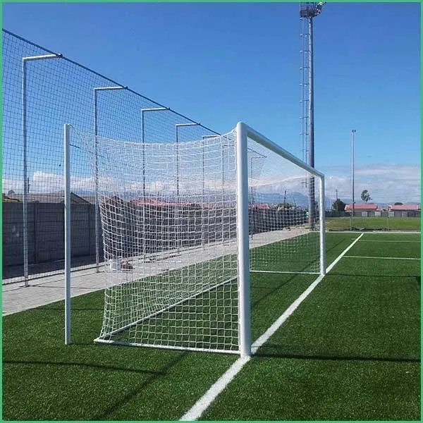
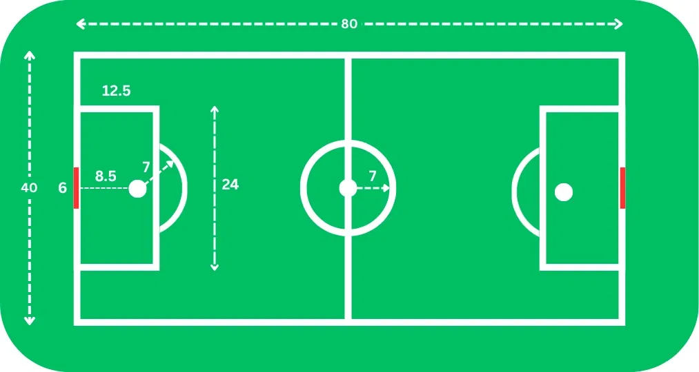
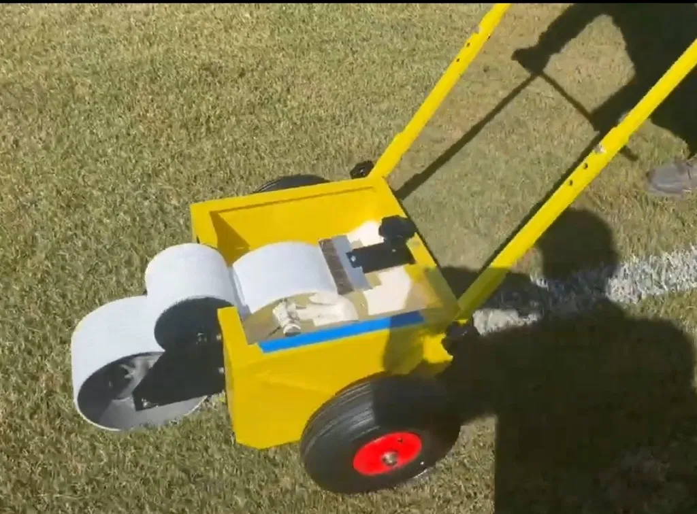
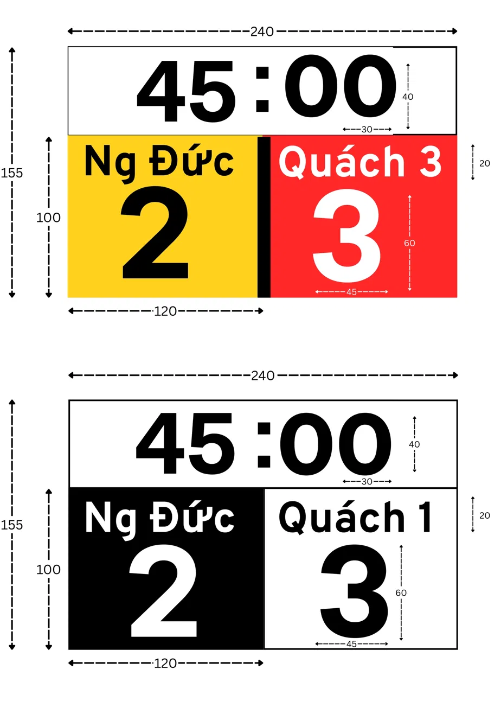

Kế hoạch mở rộng sân & giải đấu

Kẻ vùng Penalty & vòng tròn giữa sân — tỷ lệ áp theo chuẩn FIFA, quy đổi cho sân 80 × 40 m:
Sơ đồ tham khảo cách kẻ vạch cho sân mới.

SVĐ Mỹ Đình ngày xưa vẫn sử dụng công cụ thô sơ, đơn giản, tiết kiệm.
Thiết bị con lăn kẻ vạch. Giá khoảng 5 triệu.

| Pot 1 | Pot 2 | |
|---|---|---|
| Đội | 1, 2, 3, 4 | 5, 6, 7, 8 |
| Mỗi đội gặp | 2 đội cùng Pot | 3 đội khác Pot |
| Tổng | 5 trận/đội | |
| Giai đoạn | Thời lượng | Số trận | Trận/tuần |
|---|---|---|---|
| League Phase | 5 tuần | 20 | 4 |
| Bán kết | 1 tuần | 2 | 2 |
| Chung kết | 1 tuần | 1 | 1 |
| Tổng | 7 tuần | 23 trận | ~3,3 |
Bán kết: Hạng 1 vs 4 · Hạng 2 vs 3
Chung kết: 2 đội thắng bán kết
Cập nhật thủ công bằng tay: Tên đội, màu sắc và thời gian chẵn
